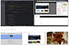
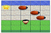

-

Online Resume
Udacity Project #2 - Online Resume
-

Frogger Type Game
Udacity Project #3 - Frogger Type Game
-
 Website Optimization
Website Optimization
Udacity Project #4 - Website Optimization
-
Cam's Pizzeria
Who wants a performant pizza?